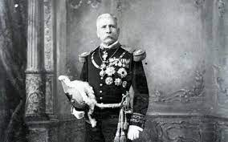
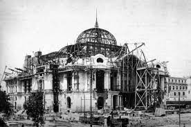

Una actitud de rebeldía y progreso inspirada por la vida bohemia, la libertad como el fin último
y la belleza como un eje rector no solo del arte, sino de la vida en general impulsaron al modernismo
y su llegada a México fue bien recibida gracias al contexto social y político de los últimos años de gobierno
de Porfirio Díaz.

Distintas construcciones nacieron influenciadas por los motivos modernistas, toda vez que una élite nacional que
reconocía en todo lo europeo (y especialmente francés) un modelo a seguir como símbolo de status y distinción
adoptó el estilo arquitectónico y decorativo de vanguardia.
Al tiempo que la mancha urbana de la Ciudad de México se expandía más allá del núcleo urbano, el nacimiento de
nuevos barrios como la Colonia Roma y la Americana (actualmente Juárez) significó terreno fértil para casonas con
recursos estilísticos propios del Art Nouveau, especialmente en lo que se refiere a la herrería y los vitrales.
El Art Nouveau no sólo dejó huella en los espacios públicos y civiles, sobre todo se cultivó en particulares,
como tiendas y casonas de la Colonia Roma que en la actualidad han sido modificadas o se encuentran en desuso.

Los edificios más representativos de Art Nouveau en CDMX
Uno de los ejemplos más representativos de la importación del Art Nouveau en México
es el edificio que alberga el Gran Hotel de la Ciudad de México construido en 1896
por Daniel Garza.
Aunque la fachada no corresponde con este estilo arquitectónico, la estructura interna que
privilegia al hierro y su andar curvilíneo a través de barandales, arcos ondulantes y el
recubrimiento con motivos naturales que cubre al elevador son algunos de los elementos mejor
conservados del Art Nouveau en nuestro país, mientras el enorme vitral del techo diseñado por
Jacques Grüber en 1908 para coronar esta obra resulta el elemento más vistoso del edificio.
A unas cuadras de distancia, el edificio que fue el primer Palacio de Hierro (reconstruido tras
un incendio como una réplica de la fachada del almacén parisino Le Bon Marché por el arquitecto
francés Paul Dubois en 1888) aún guarda detalles Art Nouveau como los mosaicos en verde y oro que
persiguen motivos vegetales. Al interior, la estructura de hierro es rematada con un enorme vitral
en el techo que provoca un juego de luces cambiante durante el día.
Aunque en México el Art Nouveau no se impuso frente a otros estilos arquitectónicos tal y como ocurrió
en Europa (el neoclásico y neogótico siguieron aplicándose en edificios públicos aún a finales del siglo XIX,
como el Palacio de Minería) , otros edificios como la primera fase del Palacio de Bellas Artes dirigida por Adamo Boari
en 1905 abunda en recursos de esta vanguardia arquitectónica, por ejemplo, las serpientes que dan forma a los arcos,
la herrería de ventanas y puertas en formas vegetales y otros ornamentos florales que se convierten en rostros humanos
conforme se acercan a las ventanas de la fachada principal.
En el norte de la ciudad, el edificio que actualmente es sede del Museo de Geología de la UNAM ubicado en Santa María de
la Ribera posee un estilo ecléctico en cuyo interior el par de escalinatas con herrería que simula flores, farolas y vitrales
emplomados con motivos geológicos, una muestra más de la huella que dejó este estilo arquitectónico y decorativo en México.